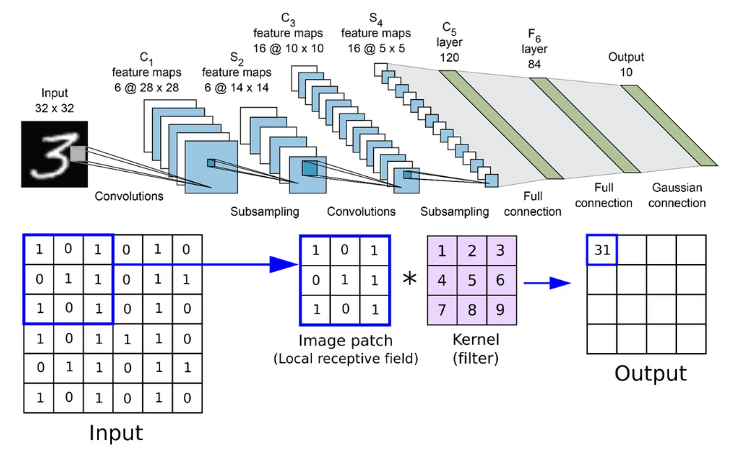

| 特性 | FP32 | FP16 | TF32 | BF16 |
|---|---|---|---|---|
| 位数 | 32 | 16 | 19（模拟） | 16 |
| 指数位 | 8 | 5 | 8 | 8 |
| 尾数位 | 23 | 10 | 10 | 7 |
| 数值范围 | 大 | 小（易溢出） | 与 FP32 一致 | 与 FP32 一致 |
| 精度 | 高 | 中等 | 中等 | 低（最差） |
| 主要用途 | 通用计算 | 推理/AMP | 训练加速 | AI 训练/推理 |
| 支持平台 | 广泛 | 一般 GPU | NVIDIA A100+ | Google TPU, Intel |
fp16, 即half precision floating point number, 简称half float，一个符号位，5个指数位，10个尾数位。
fp16的主要问题是指数位不够，从8降到5，表达的数值范围不够了。从1e-127~1e+128，降到了1e-15~1e+16.
tf32，即tensor float 32，由nVidia提出，一个符号位，8个指数位，10个尾数位。指数位个数与fp32相同，表达的数值范围相同。尾数减少了，精度不如fp32，但与fp16是一样的。共使用19个比特。
bf16，即brain float 16，由Google Brain团队提出，一个符号位，8个指数位，7个尾数位。指数位个数与fp32相同，表达的数值范围相同，尾数更少了，精度更差了，不如fp16，但AI计算能容忍。共使用16比特。
±1e-38 到 ±1e+38✅ 举例：大多数现代 GPU 在 CUDA 中默认使用 FP32 进行计算。
±1e-15 到 ±1e+16（远小于 FP32）⚠️ 例如：在训练中，梯度可能太小而被截断为 0（下溢），导致训练失败。
📌 补充：虽然 FP16 内存节省一半，但因数值范围小，稳定性差，不适合直接用于模型训练。
±1e-127 ~ ±1e+128）✅ 关键点：TF32 是一种“硬件优化”的中间格式，不是标准浮点格式，仅在特定 GPU 上可用。
🔍 对比： | 格式 | 指数位 | 尾数位 | 总位数 | 动态范围 | 精度 | |——–|——–|——–|——–|———–|——-| | FP32 | 8 | 23 | 32 | 很大 | 高 | | FP16 | 5 | 10 | 16 | 小 | 中等 | | TF32 | 8 | 10 | 19 | 大 | 中等 | | BF16 | 8 | 7 | 16 | 大 | 低 |
💡 所以说：BF16 的精度比 FP16 差，但比 FP16 更稳定（因为指数位一样）。
| 场景 | 推荐格式 | 说明 |
|---|---|---|
| 深度学习训练 | BF16 或 TF32 | 稳定 + 快速；NVIDIA 推荐 TF32，Google 推荐 BF16 |
| 推理（部署） | FP16 / BF16 | 内存小，速度快，可接受较低精度 |
| 科学计算 | FP32 | 必须保证高精度 |
| 边缘设备 | FP16 | 内存受限，精度允许牺牲 |
通常Tensor指四维矩阵，每个维度分别为[N,C,W,H]，即batch, channel, width,height。例如，在处理一批图像时，N表示同时处理的图像数量，比如32张图片；C表示颜色通道，如RGB图像的3个通道；W和H则分别表示图像的宽度和高度像素值，比如224x224。在CNN中，N表示batch，方便理解时可以认为它是1，就是说它实际是3维矩阵，但这仅适用于单样本处理场景，实际训练中batch通常大于1以提升效率和泛化能力。
可以看到，这种表述很大程度上是为图像设计的，不适用于声音和LLM。对于声音数据，例如音频信号，通常使用一维或二维张量，如 [batch, time_steps, frequency_bins ]或[ batch, channels, time ]，其中时间步和频率箱取代了空间维度。对于LLM（大语言模型），输入往往是序列数据，张量结构可能为[ batch, sequence_length, embedding_dim ]，其中序列长度表示词元数量，嵌入维度捕获语义信息，完全没有空间维度的概念。因此，Tensor的维度定义需要根据具体应用灵活调整，而非局限于图像处理的传统框架。
在LLM（Large Language Model，大语言模型）场景中，输入和输出通常以序列化的张量形式处理。输入形状一般为[ batch_size, sequence_length, hidden_dim ]，其中batch_size表示批处理大小，sequence_length是文本序列的长度（如512或1024个token），hidden_dim代表每个token的嵌入维度（例如768或1024）。输出形状与输入一致，但可能通过线性层调整维度，例如在分类任务中输出[ batch_size, sequence_length, vocab_size ]的概率分布。
矩阵运算（如线性变换）可通过卷积实现转换：例如，全连接层（矩阵乘法）可视为1x1卷积，其中卷积核的输入和输出通道数对应矩阵的维度。具体地，若有一个权重矩阵W of shape [ output_dim, input_dim ]，可重塑为卷积核形状[ output_dim, input_dim, 1, 1 ]，从而对输入张量应用1x1卷积，等效于矩阵乘法。这利用了卷积的局部性和参数共享特性，但牺牲了全局连接性，适用于某些硬件优化。
在LLM中，以下算子通常必须在HVX（Hexagon Vector eXtensions，高通的DSP向量加速单元）中：

每一个卷积层有Cin * Cout个卷积核，输出featuremap上[ c,w,h]上的值是$\sum\limits_{k=0}^{C_{in}} weight(j,k)*input(1,k)$，如果有bias，直接相加。j是输出channel号。k是输入channel号。input的形状[ N,C,W,H ]分别为[ 1, Cin, Win, Hin ]，weight的形状为[ N,C,W,H]分别为[Cout, Cin, 3,3], 3是kernel size。
Input
|
Conv2D
|
Conv2D
|
Residual Block x 1
|
Residual Block x 2
|
Residual Block x 8
|
Residual Block x 8
|
Residual Block x 4
|
Conv2D
|
Conv2D
|
FC
|
Output
Darknet-53网络：(其中一个残差块包含两个卷积层）
import torch
import torch.nn as nn
class Darknet53(nn.Module):
def __init__(self):
super(Darknet53, self).__init__()
# 卷积层1
self.conv1 = nn.Conv2d(3, 32, 3, 1, 1)
self.bn1 = nn.BatchNorm2d(32)
self.relu1 = nn.LeakyReLU(0.1)
# 卷积层2
self.conv2 = nn.Conv2d(32, 64, 3, 2, 1)
self.bn2 = nn.BatchNorm2d(64)
self.relu2 = nn.LeakyReLU(0.1)
# 残差块1
self.resblock1 = self._make_resblock(64, 32, 64)
# 卷积层3
self.conv3 = nn.Conv2d(64, 128, 3, 2, 1)
self.bn3 = nn.BatchNorm2d(128)
self.relu3 = nn.LeakyReLU(0.1)
# 残差块2
self.resblock2 = self._make_resblock(128, 64, 128)
self.resblock3 = self._make_resblock(128, 64, 128)
# 卷积层4
self.conv4 = nn.Conv2d(128, 256, 3, 2, 1)
self.bn4 = nn.BatchNorm2d(256)
self.relu4 = nn.LeakyReLU(0.1)
# 残差块3
self.resblock4 = self._make_resblock(256, 128, 256)
self.resblock5 = self._make_resblock(256, 128, 256)
self.resblock6 = self._make_resblock(256, 128, 256)
self.resblock7 = self._make_resblock(256, 128, 256)
self.resblock8 = self._make_resblock(256, 128, 256)
self.resblock9 = self._make_resblock(256, 128, 256)
self.resblock10 = self._make_resblock(256, 128, 256)
self.resblock11 = self._make_resblock(256, 128, 256)
# 卷积层5
self.conv5 = nn.Conv2d(256, 512, 3, 2, 1)
self.bn5 = nn.BatchNorm2d(512)
self.relu5 = nn.LeakyReLU(0.1)
# 残差块4
self.resblock12 = self._make_resblock(512, 256, 512)
self.resblock13 = self._make_resblock(512, 256, 512)
self.resblock14 = self._make_resblock(512, 256, 512)
self.resblock15 = self._make_resblock(512, 256, 512)
self.resblock16 = self._make_resblock(512, 256, 512)
self.resblock17 = self._make_resblock(512, 256, 512)
self.resblock18 = self._make_resblock(512, 256, 512)
self.resblock19 = self._make_resblock(512, 256, 512)
# 卷积层6
self.conv6 = nn.Conv2d(512, 1024, 3, 2, 1)
self.bn6 = nn.BatchNorm2d(1024)
self.relu6 = nn.LeakyReLU(0.1)
# 残差块5
self.resblock20 = self._make_resblock(1024, 512, 1024)
self.resblock21 = self._make_resblock(1024, 512, 1024)
self.resblock22 = self._make_resblock(1024, 512, 1024)
self.resblock23 = self._make_resblock(1024, 512, 1024)
# 平均池化层
self.avgpool = nn.AdaptiveAvgPool2d((1, 1))
def forward(self, x):
x = self.relu1(self.bn1(self.conv1(x)))
x = self.relu2(self.bn2(self.conv2(x)))
x = self.resblock1(x)
x = self.relu3(self.bn3(selfconv3(x)))
x = self.resblock2(x)
x = self.resblock3(x)
x = self.relu4(self.bn4(self.conv4(x)))
x = self.resblock4(x)
x = self.resblock5(x)
x = self.resblock6(x)
x = self.resblock7(x)
x = self.resblock8(x)
x = self.resblock9(x)
x = self.resblock10(x)
x = self.resblock11(x)
x = self.relu5(self.bn5(self.conv5(x)))
x = self.resblock12(x)
x = self.resblock13(x)
x = self.resblock14(x)
x = self.resblock15(x)
x = self.resblock16(x)
x = self.resblock17(x)
x = self.resblock18(x)
x = self.resblock19(x)
x = self.relu6(self.bn6(self.conv6(x)))
x = self.resblock20(x)
x = self.resblock21(x)
x = self.resblock22(x)
x = self.resblock23(x)
x = self.avgpool(x)
x = x.view(x.size(0), -1)
return x
def _make_resblock(self, inplanes, planes, outplanes):
return nn.Sequential(
nn.Conv2d(inplanes, planes, 1, 1, 0),
nn.BatchNorm2d(planes),
nn.LeakyReLU(0.1),
nn.Conv2d(planes, outplanes, 3, 1, 1),
nn.BatchNorm2d(outplanes),
nn.LeakyReLU(0.1),
)
残差块长这样：
import torch
import torch.nn as nn
class ResidualBlock(nn.Module):
def __init__(self, in_channels, out_channels, stride=1):
super(ResidualBlock, self).__init__()
self.conv1 = nn.Conv2d(in_channels, out_channels, kernel_size=3, stride=stride, padding=1, bias=False)
self.bn1 = nn.BatchNorm2d(out_channels)
self.relu = nn.ReLU(inplace=True)
self.conv2 = nn.Conv2d(out_channels, out_channels, kernel_size=3, stride=1, padding=1, bias=False)
self.bn2 = nn.BatchNorm2d(out_channels)
# 如果输入输出通道数不同，需要使用1x1卷积核进行调整
self.shortcut = nn.Sequential()
if stride != 1 or in_channels != out_channels:
self.shortcut = nn.Sequential(
nn.Conv2d(in_channels, out_channels, kernel_size=1, stride=stride, bias=False),
nn.BatchNorm2d(out_channels)
)
def forward(self, x):
out = self.relu(self.bn1(self.conv1(x)))
out = self.bn2(self.conv2(out))
out += self.shortcut(x)
out = self.relu(out)
return out
class ResNet(nn.Module):
def __init__(self, block, num_blocks, num_classes=10):
super(ResNet, self).__init__()
self.in_channels = 16
self.conv = nn.Conv2d(3, 16, kernel_size=3, stride=1, padding=1, bias=False)
self.bn = nn.BatchNorm2d(16)
self.relu = nn.ReLU(inplace=True)
self.layer1 = self.make_layer(block, 16, num_blocks[0], stride=1)
self.layer2 = self.make_layer(block, 32, num_blocks[1], stride=2)
self.layer3 = self.make_layer(block, 64, num_blocks[2], stride=2)
self.avg_pool = nn.AdaptiveAvgPool2d((1, 1))
self.fc = nn.Linear(64, num_classes)
def make_layer(self, block, out_channels, num_blocks, stride):
layers = []
layers.append(block(self.in_channels, out_channels, stride))
self.in_channels = out_channels
for i in range(num_blocks - 1):
layers.append(block(out_channels, out_channels, stride=1))
return nn.Sequential(*layers)
def forward(self, x):
out = self.relu(self.bn(self.conv(x)))
out = self.layer1(out)
out = self.layer2(out)
out = self.layer3(out)
out = self.avg_pool(out)
out = out.view(out.size(0), -1)
out = self.fc(out)
return out
def ResNet18():
return ResNet(ResidualBlock, [2, 2, 2])
torch.nn.Conv2d(in_channels, out_channels, kernel_size, stride=1, padding=0, dilation=1, groups=1, bias=True, padding_mode='zeros', device=None, dtype=None)
VGG：VGG是由牛津大学的研究团队提出的一种深度卷积神经网络，其主要特点是采用一系列具有相同的卷积层和池化层组成的块来构建网络，在ImageNet等数据集上取得了很好的表现。
Inception：Inception是由谷歌的研究团队提出的一种深度卷积神经网络，其主要特点是采用多个不同大小和不同结构的卷积核来提取特征，并采用并行的结构来加速计算。
MobileNet：MobileNet是由谷歌的研究团队提出的一种轻量级深度卷积神经网络，其主要特点是采用深度可分离卷积（depthwise separable convolution）来减少计算量和参数数量，适合在移动设备等资源有限的场景中应用。
EfficientNet：EfficientNet是由谷歌的研究团队提出的一种基于自动化神经网络结构搜索的方法来构建高效的深度卷积神经网络，既考虑了模型深度、宽度和分辨率等因素，同时也取得了很好的表现。
def _make_resblock(self, inplanes, planes, outplanes):
return nn.Sequential(
nn.Conv2d(inplanes, planes, 1, 1, 0),
nn.BatchNorm2d(planes),
nn.LeakyReLU(0.1),
nn.Conv2d(planes, outplanes, 3, 1, 1),
nn.BatchNorm2d(outplanes),
nn.LeakyReLU(0.1),
)